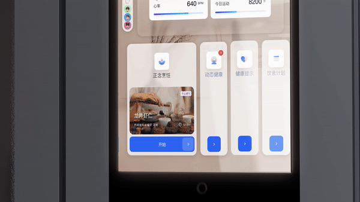

01 Dynamic Health
Food picked for how you feel.
Facial recognition reads your health status, then suggests ingredients and recipes.

From data display to family hub.
The screen on Haier's next smart fridge, designed around how families eat and cook.
 Shown at AWE
2 new scenarios
Shown at AWE
2 new scenarios
Ten modules, one warm visual language.
Clear scenarios and a UI system that make smart features feel natural.
Every idea had to work on a real appliance.
The work went straight into Haier's new fridge and its global showcase.
PHOENIX proposed Health 3.0 with Haier: support for each family member's physical, mental and relational health.
Eat for how your body is doing today.
Make cooking a calm break from the phone.
Put the shared screen where the family already meets.
Mapped what Haier's fridge can already do.
Internal workshops turned ideas into early solution concepts.
Quick rounds of research with target users.
Four core scenarios became the guiding cases for the product.
Facial recognition reads your health status, then suggests ingredients and recipes.

Recipes, music and voice guidance turn cooking into a break.
The fridge moved from showing data to connecting the family around food.
The scenarios and UI were delivered for Haier's next-generation smart fridge.
In unfamiliar territory, I learned to find the feasible idea and deliver it quickly for a real launch.
At an innovation studio, I learned to connect trends, technologies and human needs, and to look ahead before shaping the design.
Wellbeing is physical and emotional. The project taught me to work through ambiguity with empathy and build a supportive team.